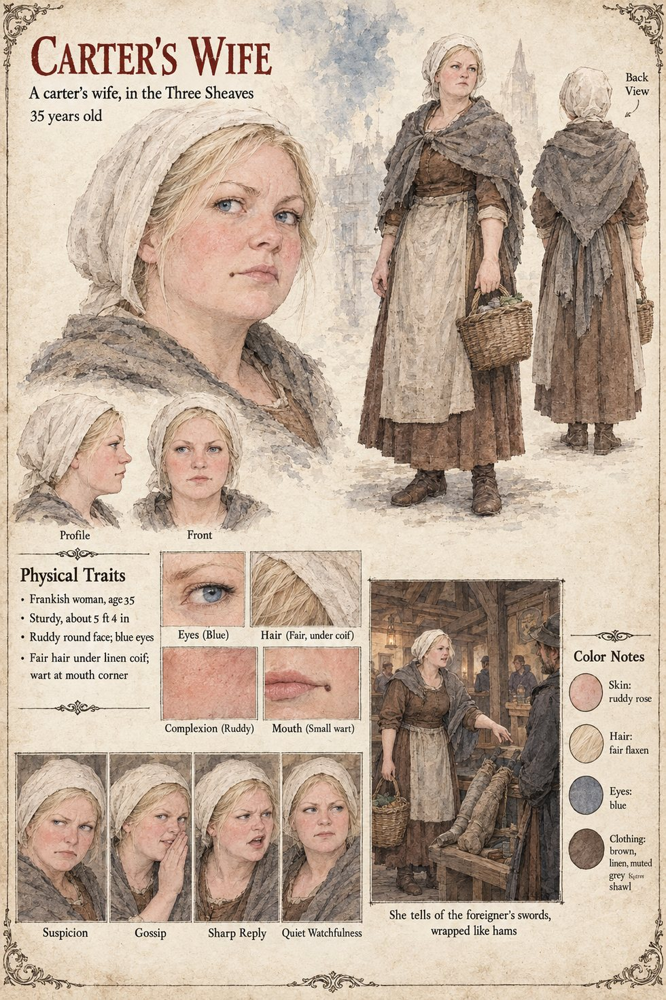

Carter's Wife
A carter's wife in the Three Sheaves · unnamed · 35 years old by her sheet
One of the voices in the Three Sheaves in the autumn and winter of the first year, when the black salt acquires its names. The tavern stands in the Middle Town at the corner of Tanners' Lane and the Cooper's Row, under a sign of three wheat-ears bound with red cord, kept by a stout cheerful widow named Waldrada who waters the beer one part to five and is held in consequence to be the most honest woman in Marnholt. A carter has called the powder the Widow's Ashes; a journeyman cooper has called it a splinter of Solan's own fire and made the foreigner a priest of the Sun-God's elder cousin, called Higa in the tongue of the east. The carter's wife adds that the foreigner, Tomobe no Higaide, never comes through the Middle Town without his two swords done up in sacking like a pair of hams. The manuscript's own comment is that this was either a courtesy to the Law, which held a man with two blades to be a man with two oaths, or the cleverest thing anyone had yet seen him do. The sacking is Hiltrude's doing, on his first evening in the Low Forge: she wrapped the long sword and then the short herself, while he watched with the courtesy of a man being searched at a border.
The manuscript gives her a trade, a husband and one sentence. The sheet's thirty-five years, Frankish, sturdy 5 ft 4 in build, ruddy round face, blue eyes, fair hair under a linen coif and wart at the corner of her mouth are its own, as are the basket, the brown dress and the grey shawl. Its panel, She tells of the foreigner's swords, wrapped like hams, shows her at a stall, pointing, while a man in a dark hat looks at a bundle on the counter; its expressions run Suspicion, Gossip, Sharp Reply and Quiet Watchfulness.
“done up in sacking like a pair of hams”
Appears In

Related Subjects


Related Records

In the Three Sheaves on a winter night Waldrada wipes a mug behind the bar while the room gives the black salt its names: a barge-hand's Night-Seed, a carter's Widow's Ashes and a journeyman cooper standing on a bench's splinter of Solan's fire, with a carter's wife leaning in, a drover from the north naming the stranger the Moon-Man, and an old sot dozing by the fire.